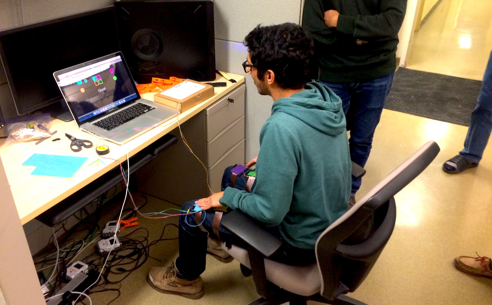
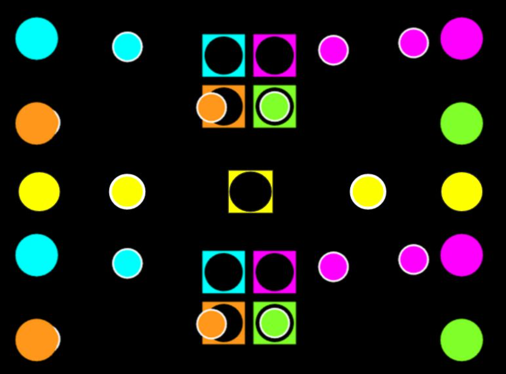
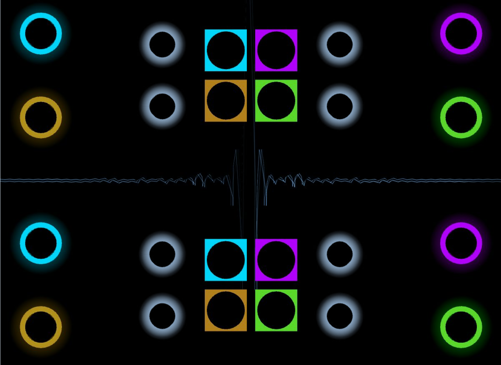
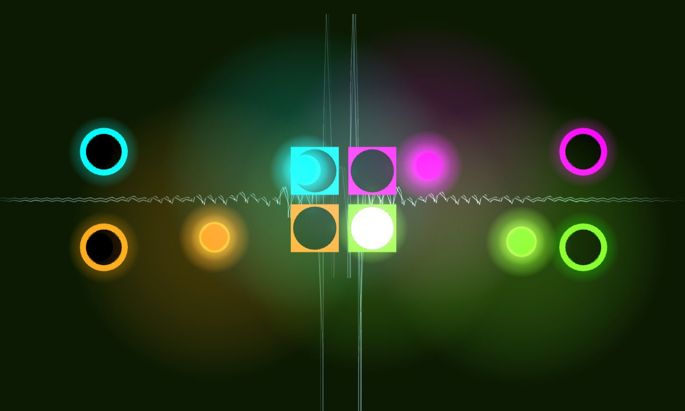

Cadence Your body is the controller! Cadence is a rhythm game in which players tap along to the beats of a song on their thighs, and where certain beats are captured by high five-ing their teammate. Timeline: Fall 2016 Course: Game Design @ Queen’s University, Kingston, Canada Type: Interaction Design, UI/UX, Prototyping, Arduino Motivation It’s All About The Rhythm In recent years, one video game genre that has rapidly increased in popularity is rhythm games. Rhythm games require users to complete actions that correspond to the rhythm of the song that is being played. “When I listen to music sometimes I start tapping along to the beat. Maybe we should make a game out of it!” Popular rhythm games like Rock Band require users to play with external peripherals that are in the shape of instruments, or to make physical foot stepping movements like in the case of Dance Dance Revolution. However, these games do not take advantage of one of the most intuitive actions when listening to music: tapping along to the beat. Moreover, the current rhythm games aforementioned do not facilitate physical cooperation between players. They allow users to play multiple instruments at the same time, but they do not have a physically interactive teamwork component. My Role I was part of the pitch team and was responsible for the experience strategy and design of the gameplay. I was involved in the game interface and interaction design. I led the hardware design tasks, producing the wearable sensors that were robust and comfortable to wear and be used by the game players. The Challenge During the ideation process we faced three interesting technological problems: Enabling players to use their bodies to communicate with the game Enabling players’ physical interactions to be communicated to the game in order to capture cooperative play Analyzing the audio of songs in order to automatically generate notes for gameplay Our Solution To solve the first two problems we created a distributed system made up of micro-controllers and sensors to detect input from users’ bodies (both knee tapping and high five-ing), and transferring that input to Unity game engine. The third problem was solved by creating a beat detection algorithm that imitates the ways in which humans perceive beats in music. This was used to analyze songs and generate beats for gameplay. Our game includes a novel control scheme that requires the use of a number of external peripherals in order to enable players to utilize their body as the game “controller”. The players attach two wired square colour coded sensors (Piezo Sensors) on each leg using straps, and put on a wristband which is connected to the control box. The Design Process We used the feedback from our play-testers constantly throughout the project to guide design decisions, priorities, and create empathy amongst the users and our team. First, we created mock sensors with paper and cardboard and asked users to wear them pretending that they are real functional sensors. Then we presented them with our initial single player user interface and observed how users interact with the sensors and the game while making qualitative observations.  These early prototype evaluations helped us refine the initial design of the game before starting any development work. We conducted play testing sessions at each milestone go gather user feedback as we made improvements to the gameplay and game hardware. The Evolution Of The Game Interface We created a two player layout that looks like two single player schemes stacked on top of each other. Play-testers did not have issues with this design, but what they did not find intuitive was the way in which cooperative notes were displayed. Collaborative Notes made the screen appear crowded and overwhelming. We initially had a yellow note in the middle of the screen, in between the two players individual gameplays. Notes that were to be played collaboratively would move across the middle of the screen.  The initial two player user interface looked like two single player schemes stacked on top of each other (where player 1 is on top and player 2 is on the bottom). We received informative feedback from users, and found that these collaborative notes made the screen appear crowded and overwhelming. Moreover, a common source of feedback was that the notes were just outside the player’s vertical peripheral vision (too high or too low), causing users to often not notice them. Collaborative Notes were just outside the player’s vertical peripheral vision, causing users to often not notice them. We decided that a shared note was not a feasible idea, and went forward with a different approach: When a note is to be played cooperatively, four hollow notes are generated from each of the player’s notes.  Iteration to the user interface with four hollow notes for collaborative play. We went forward with a different approach: When a note is to be played cooperatively, four hollow notes are generated from each of the player’s notes. This approach to use four hollow notes for collaborative notes was received very positively by users. Four out of six users said that upon first seeing the set of four notes appear, they felt overwhelmed, but that they quickly adjusted to it. The other two users did not feel overwhelmed at any point. When asked if the new interface was confusing, all six users said no.  Final user interface with visual feedback representing the maximum combo multiplier. Video